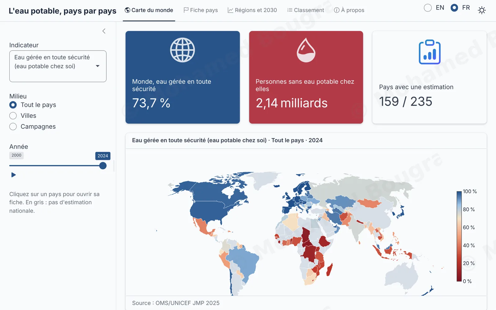
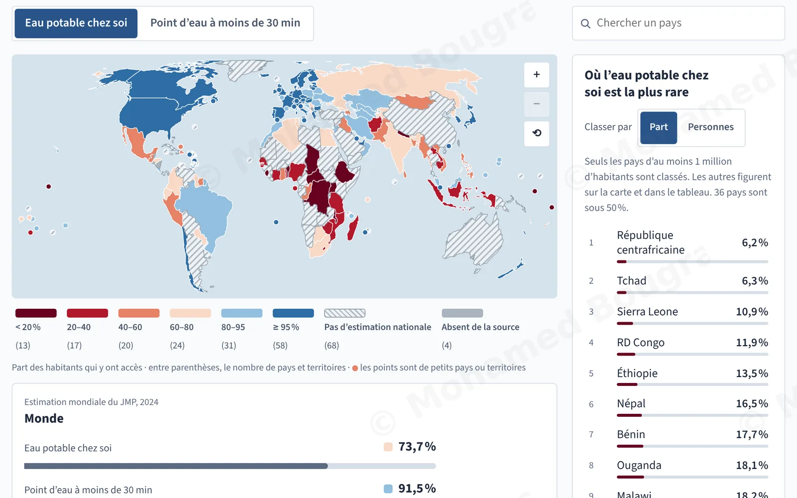
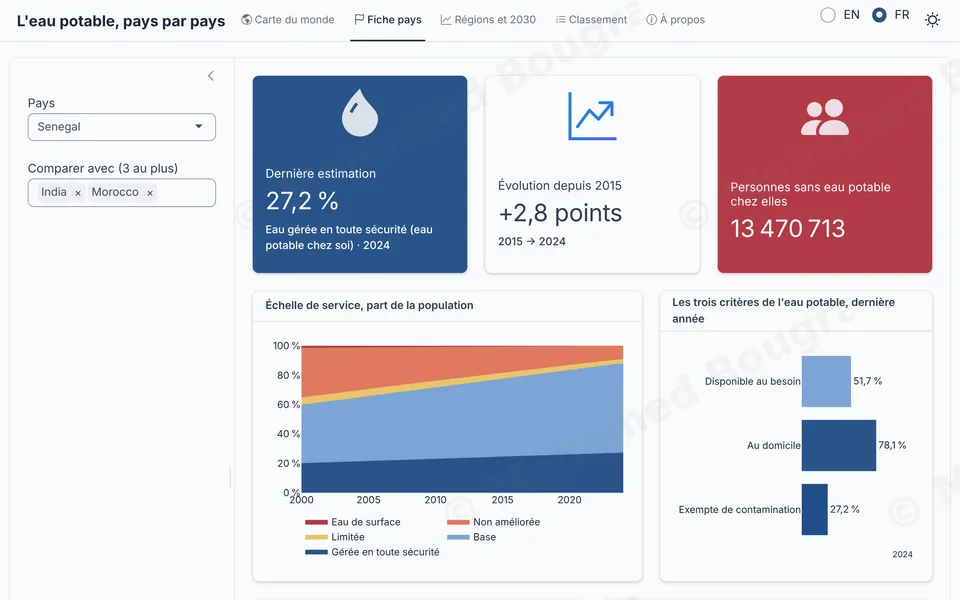
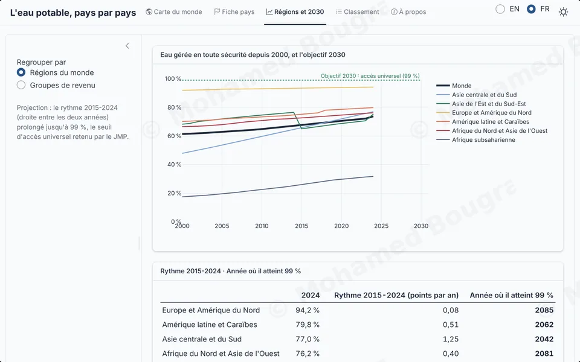
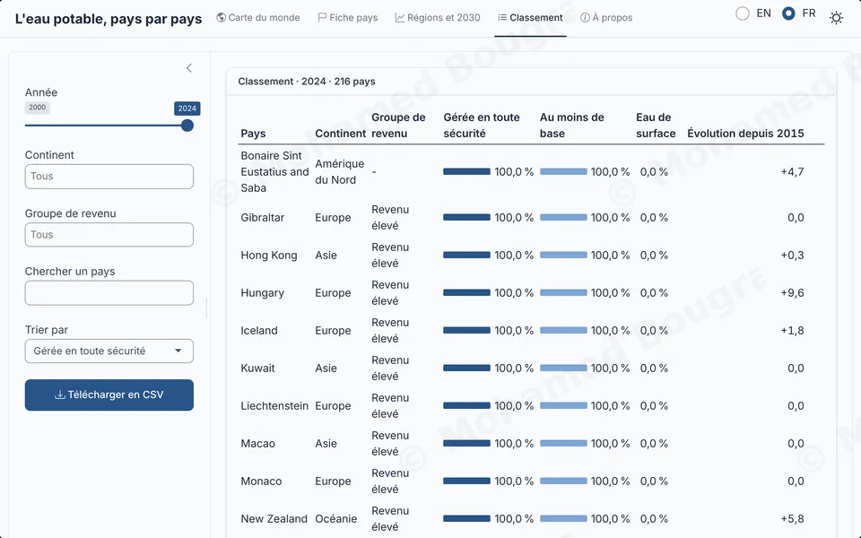
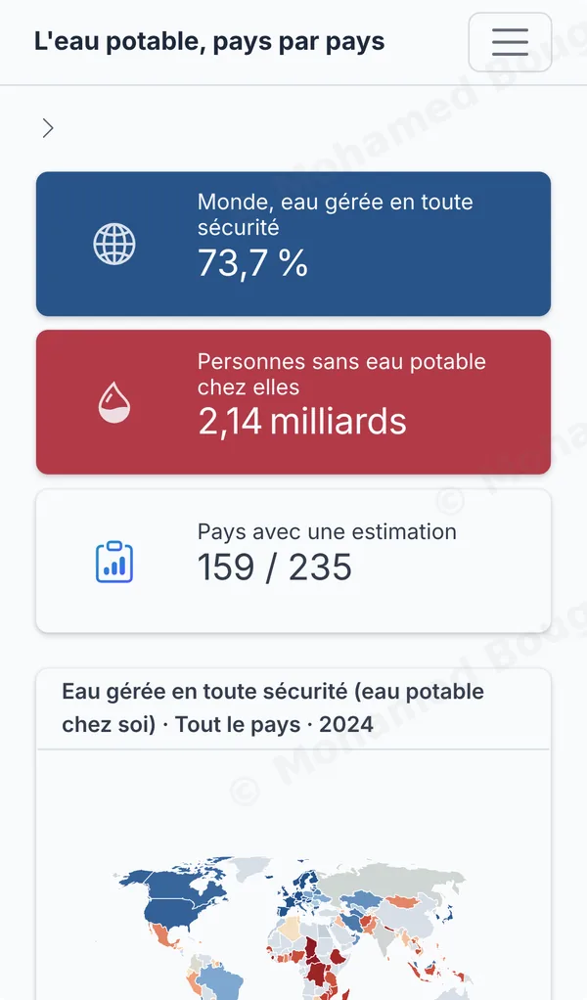

Étude de cas · R Shiny · 2026
L’eau potable pays par pays, en R Shiny
Une application pour explorer l’accès à l’eau potable dans 235 pays et territoires, de 2000 à 2024 : quatre vues, deux langues, et R qui tourne dans le navigateur, sans serveur.
Premier chargement : environ 10 secondes sur ordinateur, le temps que R s’installe dans votre navigateur. Rien ne s’installe sur votre appareil. L’application s’ouvre dans un nouvel onglet.
- Année
- 2026
- Outils
- R, Shiny, bslib, plotly.js, webR
- Données
- OMS/UNICEF (JMP 2025), 2000-2024
- Format
- Application web, sans serveur, ordinateur et téléphone
Même carte, deux langages


Ce que montre ce projet
- 4
modules Shiny, un par onglet, chacun testé avec
testServer. - 31
vérifications automatiques, sur les calculs et sur les modules.
- 60 → 9 s
pour afficher la carte au premier chargement, mesuré sur le site en ligne après mon travail d’optimisation.
L’eau potable pour tous en 2030 ?
L’ONU s’est fixé l’accès universel à l’eau potable pour 2030. Les estimations de l’OMS et de l’UNICEF permettent de mesurer où en est chaque pays, mais elles tiennent dans des tableaux de plusieurs milliers de lignes.
L’application les rend lisibles en quelques clics : où en est un pays, comment il se compare à ses voisins, et à quel rythme le monde avance.
En 2024, 73,7 % de la population mondiale a de l’eau gérée en toute sécurité chez elle ; 2,14 milliards de personnes n’en ont pas. Au rythme de 2015-2024, le monde atteindrait 99 % en 2062, 32 ans après l’objectif de 2030.
Quatre vues, une seule question chacune
-
Carte du monde
Trois indicateurs, tout le pays, la ville ou la campagne, et une année que l’on fait défiler de 2000 à 2024. Les pays sans estimation nationale restent en gris, au lieu de disparaître.
-
Fiche pays
L’échelle des services d’eau depuis 2000, les trois critères de l’eau potable, l’écart entre villes et campagnes, et la comparaison avec trois autres pays au plus.

-
Régions et 2030
Les régions du monde et les groupes de revenu depuis 2000, face à l’objectif. Pour chacun, l’année où il atteindrait 99 % s’il gardait son rythme de 2015-2024.

-
Classement
Tous les pays d’une année, filtrés par continent ou par revenu, cherchables par nom, triés sur l’indicateur voulu, et exportables en CSV.

-
Sur téléphone
Les mêmes vues sur un petit écran : les chiffres clés se resserrent, la légende passe sous la carte, et la carte tient dans le premier écran.

Architecture et qualité du code
Des modules qui communiquent
Un module par onglet, chacun avec son espace de noms. La carte renvoie le pays cliqué ; la fiche pays expose de quoi le sélectionner.
Des vues reliées
Une seule année pour toute l’application : la choisir sur la carte déplace le classement et le repère des graphiques. Un clic sur un pays, dans la carte, la liste ou le classement, ouvre sa fiche.
Un lien partageable
L’adresse nomme la langue, l’onglet et le pays : on peut envoyer la fiche d’un pays, et l’application s’ouvre dessus.
Une sortie Shiny sur mesure
R construit chaque figure, JavaScript la dessine avec plotly.js et renvoie les clics à R. Le paquet plotly pour R aurait ajouté 95 Mo à charger dans le navigateur.
Un graphe réactif sobre
Réactifs mis en cache avec
bindCache, recherche et comparaison temporisées avecdebounce: un calcul par changement utile.Testée
18 vérifications sur les calculs avec testthat, et 13 sur les modules avec
testServer.Bilingue, clair et sombre
Anglais ou français, thème clair ou sombre, basculés sans recharger la page ; les choix en cours sont gardés.
Pensée pour le téléphone
Sur petit écran, légendes et échelles passent sous les graphiques, et les tableaux défilent avec leur première colonne fixée.
clic <- carte_server("carte", lang, sombre)
pays <- pays_server("pays", lang, sombre)
# Modules talking to each other: a click on the map opens that country.
observeEvent(clic(), {
pays$selectionner(clic())
nav_select("onglets", "pays")
})De 60 à 9 secondes
Sans serveur, R s’exécute dans le navigateur grâce à webR. La première version mettait une minute à afficher la carte. J’ai mesuré le chargement étape par étape, puis retiré ce qui ne servait pas au visiteur :
- la page et son thème sont préparés une fois, à la publication, au lieu de l’être à chaque visite ;
- les fichiers de la page sont servis directement au navigateur au lieu de passer un par un par R ;
- les contours des pays restent dans le navigateur ; seuls les codes et les valeurs transitent par R.
| Étape | Avant | Après |
|---|---|---|
| Interface visible | 28,9 s | 8,5 s |
| Carte affichée | 60,1 s | 9,4 s |
Ce que j’ai mobilisé
- R
- Shiny et ses modules
- bslib
- testthat
- JavaScript
- D3
- plotly.js
- webR et shinylive
- Performance web
- Accessibilité
Données : programme commun OMS/UNICEF de suivi (JMP), estimations 2025, années 2000 à 2024. Mêmes données que mon rapport Power BI sur l’eau potable.